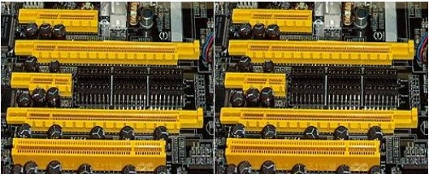
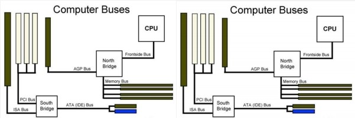
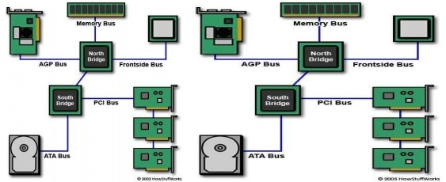

BUS
When referring to a computer, the bus also known as the address bus, data bus, or local bus is a data connection between two or more devices connected to the computer. For example, a bus enables a computer processor to communicate with the memory or a video card to communicate with the memory. The bus contains multiple wires (signal lines) that contain addressing information that describes the memory location of where the data is being sent or where it is being retrieved. Each wire in the bus carries a single bit of information, which means the more wires a bus has the more information it can address. For example, a computer with a 32-bit address bus can address 4 GB of memory, and a computer with a 36-bit bus can address 64 GB of memory. You can think of it as a public transportation or school bus.


Note: Bus is not an acronym for anything.
- A bus is capable of being a parallel or serial bus and today all computers utilize two bus types, an internal bus or local bus and an external bus, also called the expansion bus.
- An internal bus enables communication between internal components such as a card and memory.
- An external bus is capable of communicating with external components such as a USB or SCSI device.
- A computer or device's bus speed is listed in MHz, e.g. 100 MHz FSB. The throughput of a bus is measured in second or megabytes per second.
Examples of computer buses
- AGP HyperTransport PATA
- ATA IDE PC Card
- EISA ISA PCI
- SATA
- SBus SCSI
- eSATA ExpressCard
- Firewire
- FSB
- MCA
- NuBus
- PCIe
- PCMCIA
- Thunderbolt
- USB
- VLB
- VME Bus
Today, many of the buses listed above are no longer used or are not as common. Below is a listing of the most buses and how they are used with a computer.
- eSATA and SATA- Computer drives and disc drives.
- PCIe- Computer expansion cards and video cards.
- USB- Computer peripherals.

hat Are Three Types of Buses on a Motherboard?
A computer sends several kinds of electronic signals back and forth among its various components. For efficiency, separate paths on the motherboard called buses each carry only one kind of signal; this boosts the computer's speed and simplifies its operation. While PC motherboards have different buses for expansion cards and external devices, all computers have three fundamental buses: Control, Instruction and Address. The whole system operates through these buses.
Bus Architecture
Computers consist of several main functional units, including the central processor, memory and input/output. The central processor performs basic arithmetic and logic, memory stores programs and data, and input/output routes data to the computer's keyboard, screen and hard drive. These parts communicate with each other. Some computer designs use a single bus shared by all parts. While in expensive, the system must manage its signals carefully, and some parts wait until others finish communicating and relinquish control of the bus.
Multiple buses reduce the waiting time and keep the parts running efficiently. The layout of a computer's buses and parts is called its bus architecture.
Control Bus
The motherboard's control bus manages the activity in the system. The control bus, like the other buses, is simply a set of connections among the parts in the computer. All parts "agree to recognize" that if one connection carries a voltage and the next one does not, it means that the central processor reads from memory. If the connections reverse roles, the processor writes to memory. Other connections deal with the "chunking" of data 8, 16, 32 or 64 bits at a time. Still others determine if data is being shuttled to the central processor from memory or the keyboard. This signaling system prevents data from going to the wrong place.
Data Bus
The data bus acts as a conduit for data from the keyboard, memory and other devices. It passes information at speeds up to billions of characters per second. The central processor reads the data, performs calculations, and moves new data back to memory, the hard drive and other locations. The control bus determines which direction the data is moving.
Address Bus
The computer must be able to access every character of memory rapidly, so every character has its own address number. The central processor specifies which addresses it wants to read or write and the address bus carries this information to a memory controller circuit, which locates and fetches the information. Some locations, called random-access memory, hold program instructions and temporary calculation results. Other locations point to the hard drive, mouse and keyboard. The control bus specifies which of these two sets of addresses become active for a particular memory operation.
The Brains
In the first module, we saw a simple block diagram of the computer processing data and creating information. This is simply an update with some of the hardware we talked about shown (along with some sample I/O devices). It's still simple!
 Lots of people call the CPU the brain of the computer - an overly simple analogy. But if we're going to use it, let's include the brain's short-term or working memory, RAM with cache being even shorter-term memory. If you share my distaste for the label of "brain", we can call it the computer's "processor system".
Lots of people call the CPU the brain of the computer - an overly simple analogy. But if we're going to use it, let's include the brain's short-term or working memory, RAM with cache being even shorter-term memory. If you share my distaste for the label of "brain", we can call it the computer's "processor system".